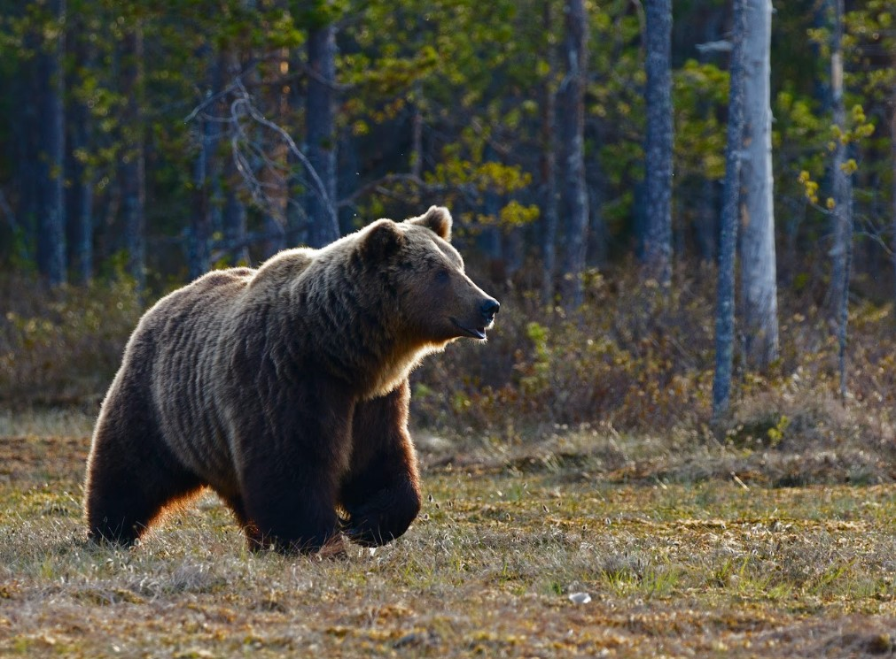

Welcome to South Canterbury's Premier Wildlife Park!
Embark on an unforgettable adventure at our unique wildlife park, nestled in the heart of South Canterbury, New Zealand. Our park is home to a diverse collection of incredible animals from three distinct ecosystems: the African Savannah, the American Wilderness, and the Arctic Tundra. Get up close and personal with majestic lions, playful arctic foxes, and gentle giraffes, all within our carefully designed and maintained habitats that prioritize animal welfare and conservation.


Join us as we celebrate the beauty of nature and inspire a new generation of wildlife enthusiasts. Our park offers a range of immersive experiences, educational programs, and engaging activities for visitors of all ages. Plan your visit today and discover the wonders of the animal kingdom at South Canterbury's Premier Wildlife Park!
